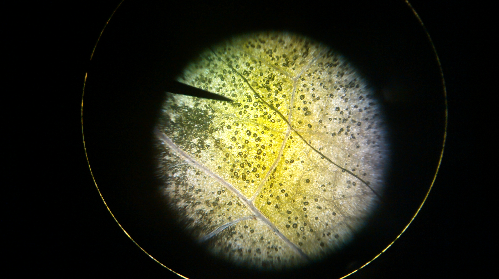

Welcome!
to
Kelly's Web page

My Favorite Links:
EMU Web Server
Google Search
Color-Hex Color Codes
My Courses:
COSC 231, Winter 2017
Thanks for stopping by.
Last updated: January 12th, 2017
Image Credits
Plant cells seen through a microscope. Image owned by me.